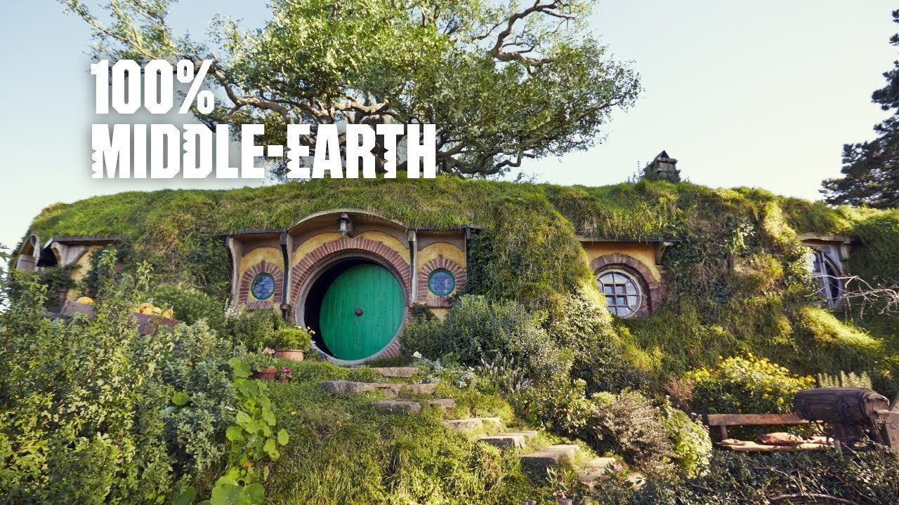
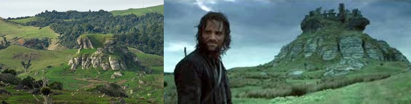
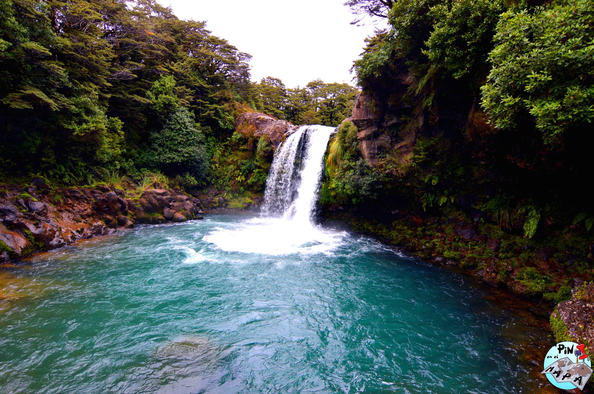
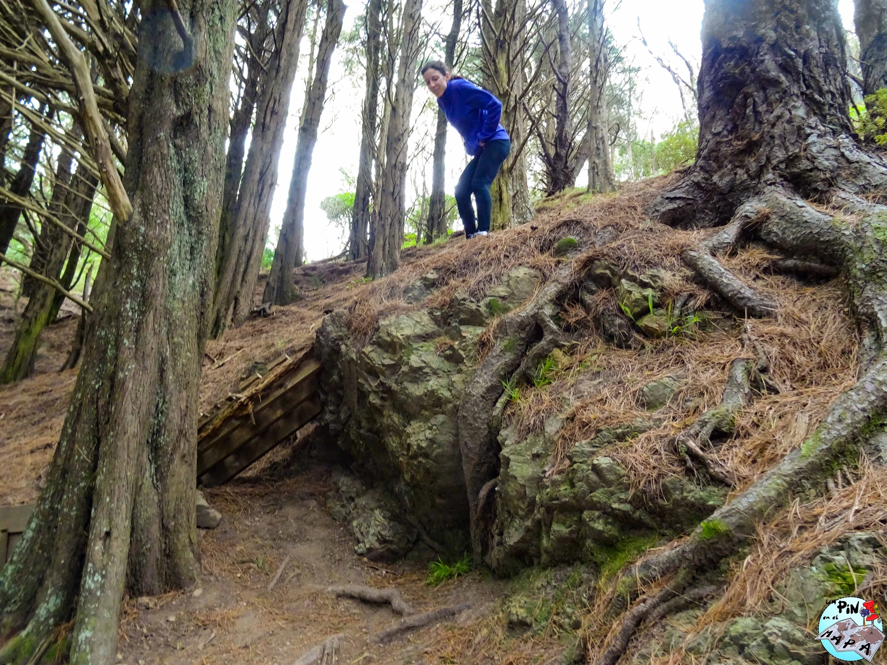
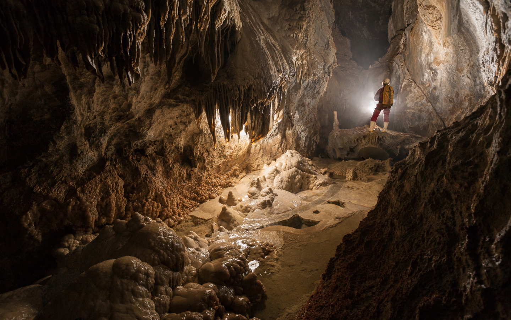
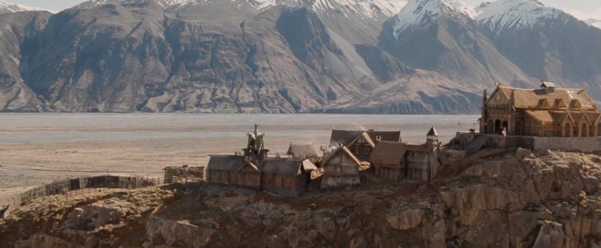
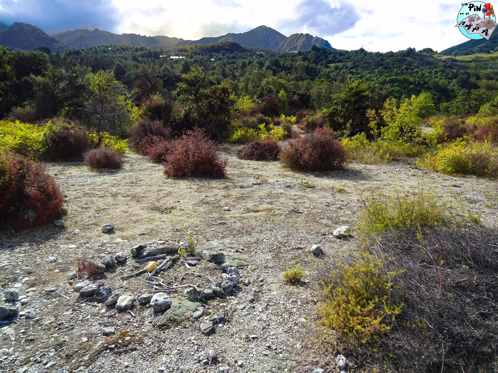
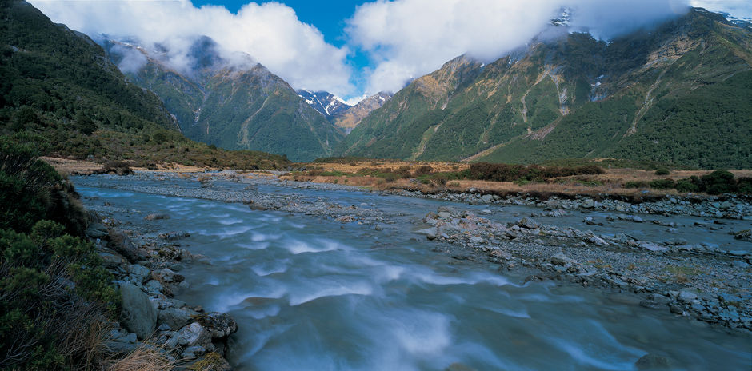
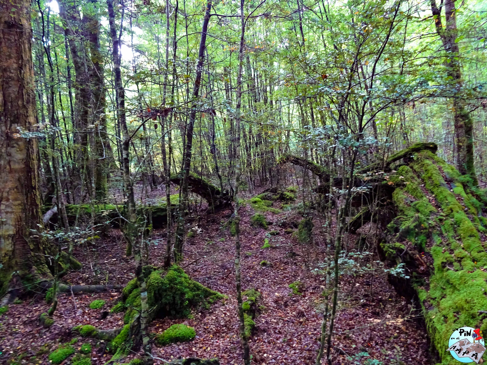

Señor de los Anillos: guía completa 40 localizaciones
Partida y regreso, historia de nuestro viaje a la Tierra Media, por un Pin en el Mapa. Una guía muy completa con 40 localizaciones del Señor de los Anillos en Nueva Zelanda.
Hemos listado 10 localizaciones distribuidas a lo largo y ancho de la isla Norte y Sur de Nueva Zelanda, también conocida como el hogar de la Tierra Media. Por lo tanto, podríais organizar un viaje exclusivamente dedicado a visitar los puntos donde se rodaron escenas de las trilogías de El Señor de los Anillos y El Hobbit, aunque nosotros recomendamos aprovechar el viaje y disfrutar también de los otros paisajes únicos que ofrece este maravilloso país.
Un dato importante a tener en cuenta para evitar desilusiones es que las películas se rodaron en su mayor parte en los estudios, por lo tanto de muchos lugares solo se tomaron las imágenes para su posterior edición. Además muchos sitios se han visto degradados por las inclemencias del tiempo, la naturaleza y la acción del ser humano.
Aquí tenéis la guía más completa con 40 localizaciones del Señor de los Anillos:
1. ISLA NORTE (La Cima de los Vientos)

Película: La Comunidad del Anillo, donde el Rey Brujo apuñaló a Frodo con la daga de Morgul.
Coordenadas: 37°28’29.2’’S 174°45’49.3’’E
Localización: De camino a Port Waikato, a un lado de la carretera Port Waikato-Waikaretu Rd cerca del cruce con la carretera Limestone Downs, podréis ver a los lejos la fortaleza de rocas. Tendréis que adentraros en el valle para verlo de cerca.
Dificultad: Alta.
Comentarios: Más negativos que positivos. Nosotros no fuimos pues no nos pillaba de paso, pero en las redes dicen que la carretera está en malas condiciones y que aunque el paisaje es muy bonito, con mal tiempo pierde visibilidad y no vale la pena.
2. HOBBITTON
Película: El Señor de los Anillos y El Hobbit, diferentes escenas de ambas trilogías fueron rodadas en el set.
Localización: 501 Buckland Rd, Hinuera, Matamata 3472
Comentarios: Sin lugar a dudas un sueño hecho realidad. Nosotros fuimos en el primer turno de la mañana para aprovechar que no hubiera grupos delante y sacar todas las fotos que quisiéramos. Importante tener en cuenta que la puesta del sol es por el otro lado de la colina, por lo tanto el momento de Gandalf y Bilbo fumando pipa mientras atardece no lo podréis rememorar.
3. EL ESTANQUE VEDADO (Tawhai Falls, también conocido como Gollums pool)

Película: Las Dos Torres, donde los exploradores de Faramir atrapan a Gollum.
Coordenadas: 39°10’21.5’’S 175°30’51.2E
Localización: Tongariro Forest Park, Manawatu-Wanganui 4691. Paseo de 800 metros ida y vuelta sin perdida hasta la cascada, desde un pequeño aparcamiento señalizado en la carretera State Highway 48 dirección Chateau Whakapapa, a poca distancia del cruce con la State Highway 47.
Comentarios: A nosotros nos encantó, ¡muy recomendada! Llevaros bañador si hace buen tiempo.
4. ESCONDITE HOBBIT (Hobbit Hideout)

Película: La Comunidad del Anillo, el Nazgul se acerca por el camino y los hobbits se esconden a un lado del mismo bajo las raíces de un árbol.
Coordenadas: 41°18’04.9’’S 175°47’219.0752’’E
Localización: En el monte Victoria de Wellington. Paseo de varios minutos desde el aparcamiento de la placa conmemorativa del primer día de grabación. Deberéis bajar por el camino siguiendo las señales que indican “Hobbit hideout”, girar a la derecha en una bifurcación del sendero para llegar a una parte del camino más ancha en una zona arbolada. Veréis el árbol a mano derecha a unos metros del camino en una pendiente de tierra pronunciada.
Comentarios: A pesar de la lluvia y viento de ese día, aprovechamos la ocasión para hacer fotos haciendo el tonto. ¡No perdáis la oportunidad!
5. SALIDA DE MORIA (Monte Owen)

Película: La Comunidad del Anillo, la comunidad escapa de Moria tras perder a Gandalf y se detienen en la salida para llorar su perdida y seguir su camino alejándose del peligro orco.
Localización: Parque nacional de Kahurangi. Ruta norte hasta la cima del Monte Owen (1875m). Empezando desde el campamento Courthouse flat, supone una caminata alpina de unas 14-15 horas ida y vuelta. Se tardaran alrededor de 3-4 horas para hacer los primeros 3 kilómetros hasta la cabaña/refugio Granity Pass Hut (sin reserva, solo 12 camas para el primero que llega), donde empezareis a reconocer el paisaje tomado en las escenas hasta llegar a la cima en otras 3-4 horas contando los descansos.
Comentarios: Necesitareis dos días para hacerlo. El camino es muy largo y pronunciado, con zonas donde escalar o descender altos escalones de piedra. Se requiere nivel experto en alta montaña para esta ruta, y además, se recomienda un alto nivel físico y buena orientación, ya que el GPS pierde señal a medio camino y debes tirar de mapa y compás. Algo a tomar en cuenta en días de lluvias, es que los conductores deben ser cautelosos y evaluar el flujo del agua antes de conducir a través de los diferentes vados. Nosotros no la hicimos dado el tiempo requerido y la dificultad. Aun así se considera una increíble caminata con bosque, lagos y zonas rocosas donde no solo veréis los paisajes de la salida de Moria sino unas vistas impresionantes de 360 grados desde la cima del monte.
6. EDORAS, ROHAN (Monte Sunday)

Película: Las Dos Torres, Edoras capital de Rohan y hogar de Meduseld, casa del ReyTheoden.
Localización: Mont Sunday, Canterbury. A unos 40 kilómetros de la carretera Hakatere Potts Rd, veréis la señal que indica el comienzo de la ruta de unos 1.5km/45minutos hasta la cima del Mt Sunday. Las coordenadas son de la vista de lejos usada en la película, que se encuentra a unos 12 minutos antes de llegar al aparcamiento. En esta web tenéis más información sobre la ruta.
Comentarios: Reconoceréis el monte desde mucha distancia, el cual tiene una increíble vista de 360 grados del valle. Ojo con el camino de gravilla y piedras para los coches bajos (40 kilómetros de baches), así como el fuerte viento de la zona. En un día con niebla no se verá nada así que atentos a las predicciones del tiempo. Sin duda uno de nuestros pasajes favoritos, además cuando fuimos, ¡había en la cima una bandera de Rohan!
7. EDORAS, ROHAN (Monte Sunday)

Película: El Retorno del Rey, escena donde Sam y Gollum discuten sobre una cazuela de conejo.
Localización: Acceder al 12 Mile Delta desde la carretera Glenorchy-Queenstown Rd. Tras pasar la zona de camping hay una explanada/aparcamiento donde veréis al final una señal para el sendero a Bobs Cave. Tomadlo y caminar durante unos 15 minutos hasta pasar el puente colgante sobre las cascadas y un poco hacia delante, veréis a mano izquierda el claro ¡desde donde se ven los Olifantes! Pasado el claro tras una zona de arbustos está el sitio donde Sam cocino la cazuela de conejo.
Comentarios: Aunque la vegetación ha crecido, es muy fácil de reconocer aunque puede perderse con facilidad. Cuando nosotros fuimos alguien había dejado una patata y hecho el circulo donde cocinaban.
8. SILVERLODE Y EL RIO ANDUIN

Película: La Comunidad del Anillo, localización donde la Comunidad deja Lothlorien y sigue su camino río Anduin en bote.
Localización: Desde la autovía 94, Te Anau-Mossburn Hwy, tomad la carretera Mavora Lakes rd hasta el primer lago South Mavora Lakes, donde veréis el punto paralelo a la carretera de gravilla que cruza el bosque.
Comentarios: Debido a que se encuentra muy lejos de cualquier otro punto de interés, nosotros no lo hicimos. La gente que ha ido dice que el punto es fácil de reconocer si llevas imágenes de la película.
9. BOSQUE DE FANGORN

Película: Las Dos Torres, punto donde Aragorn, Legolas y Gimli se encuentran con Gandalf el Blanco en el bosque de Fangorn mientras seguían el rastro de los hobbits.
Localización: Desde la autovía 94, Te Anau-Mossburn Hwy, tomad la carretera Kakapo y después la carretera Takaro hasta casi el final.
Comentarios: No recomendamos ir pues la zona de rodaje se encuentra en una zona privada, lejos de cualquier otro punto de interés. Nosotros fuimos y acabamos decepcionados ya que ni lo pudimos ver y la zona no tiene nada especial que mereciera el esfuerzo y tiempo invertido.
10. RÍO DEL BOSQUE NEGRO (Pelorus river)
Película: El Hobbit: La desolación de Smaug, lugar donde se rodó la escena de los barriles.
Localización: Conocido como Aratiatia rapids. Cruza la calle desde el aparcamiento, pasa bajo el puente (Pelorus Bridge) y un poco adelante reconocerás la zona inmediatamente.
Comentarios: Zona espectacular donde darse un chapuzón.